Listening to the tests
PyDay Tenerife 2018
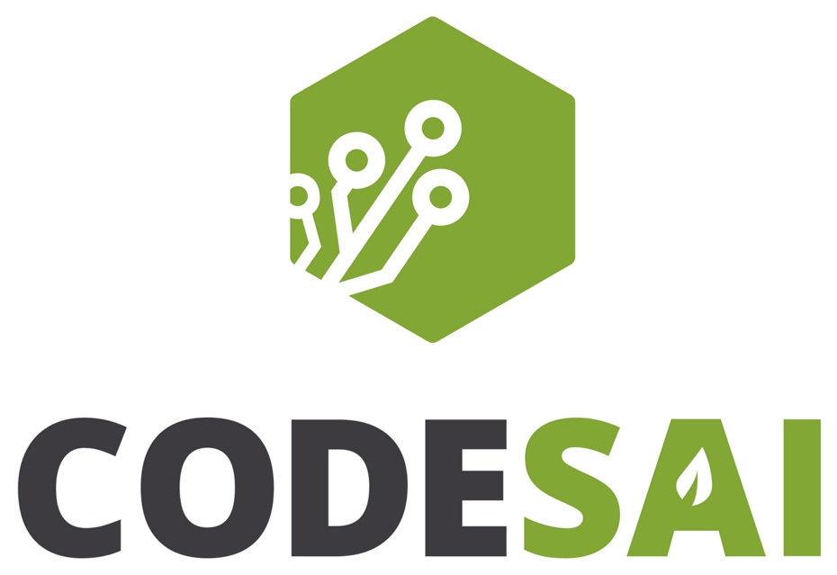
Fran Reyes -

fran_reyes
TDD cycle

Three Laws of TDD
- You must write a failing test before you write any production code.
- You must not write more of a test than is sufficient to fail, or fail to compile.
- You must not write more production code than is sufficient to make the currently failing test pass.
TDD in Python
PyTest as testing tool
PyHamcrest to improve your assertions
Unittest.mock / Doublex for test doubles
Example test
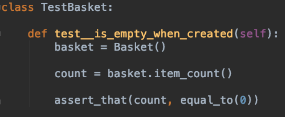Why should I care about TDD?
Focussed
Concrete
Empirical
TDD combines testing, specification and design into one holistic activity
Listening to a failing test
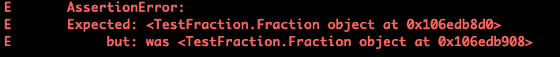Improve your reds
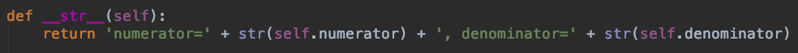 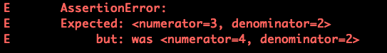Improve your reds (Matcher)
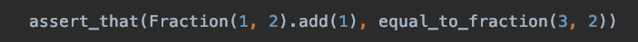 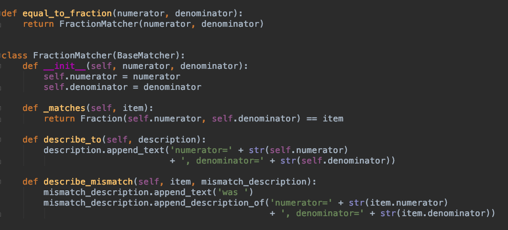Make the diagnostics clear
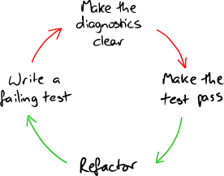More Listening: Bloated Constructors
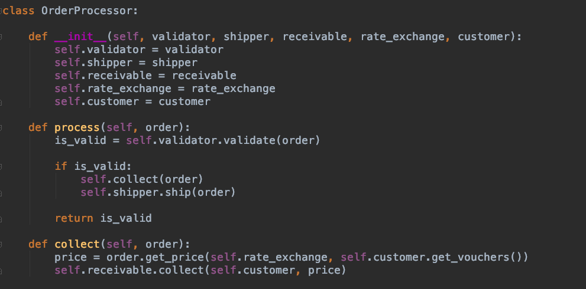More Listening: Bloated Constructors
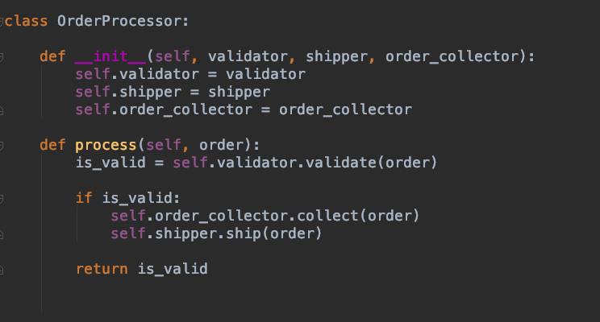More Listening: Constructing complex test data
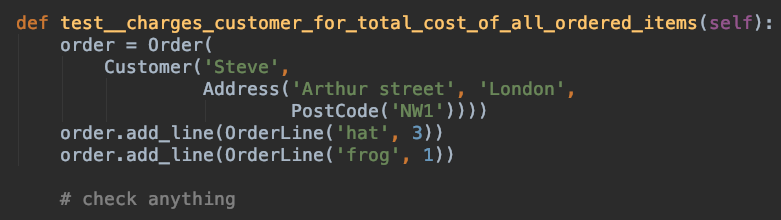More Listening: Constructing complex test data
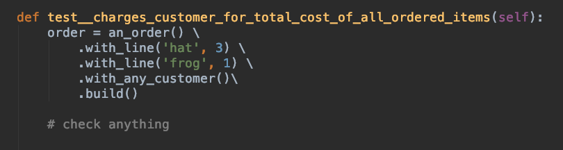Hard to write a test?

We don't just ask ourselves how to test it, but also why is it difficult to test
GOOS - Steve Freeman and Nat Pryce
The End

References
Growing Object-Oriented Software Guided by Tests
Test Smell: Bloated Constructor
Steve Freeman - Keynote: Why everyone should care about TDD in CAS Vitoria